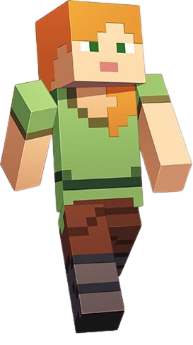

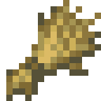
THE GREAT HARVEST FESTIVALEvery Day Habits vs Right Now Actions!
Welcome to the Great Harvest Festival! Every morning, Steve and Alex work on their sunny farm: cows give milk, chickens lay eggs, and bees make sweet honey. Look through your spyglass right now! Today is a party day! Alex is baking a big cake, the pig is eating a carrot, and the Villager is opening the Farm Bakery Cafe!
HARVEST BASKET CHECKLIST:
Tap all 10 Food & Farm cards below! Flip each card to see the Ukrainian word and earn +2 Diamonds!
WHEN DO WE USE EACH TENSE?
Compare EVERY DAY (Present Simple) and RIGHT NOW (Present Continuous)!
Habits, routines, and things that happen every day or usually!
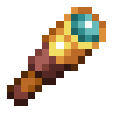
Actions happening right now at this very second in front of our eyes!

Spot the secret clue words to pick the right tense:
HOW TO BUILD SENTENCES (+ / - / ?)
Compare both teams side-by-side! Never mix do/does with am/is/are + -ing!

Game 1: Affirmative Harvest (+)
Spot the time clue: Every Day (V / V-s) vs Right Now (am / is / are + V-ing)!
Loading task...
HARVEST ROUND COMPLETE!
Game 5: Farmer's Spyglass — Habit Diary vs Live Camera!
Look at both windows! Complete the missing verb in the Farm Habit Diary (Every Day) OR the Live Spyglass Camera (Right Now!)!
Read the Habit Diary, then look through the Spyglass to complete what is happening RIGHT NOW!
SPYGLASS MISSION COMPLETE!
You compared all 10 Habit Diary & Spyglass Live scenes!
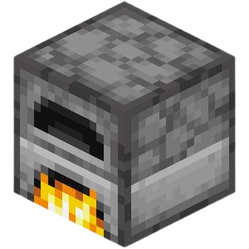
MINECRAFT FARM BAKERY & CAFE
Spend Diamonds to open all 8 cozy Bakery Tables! Tap any open table to serve guests and hear their Every Day vs Right Now story!

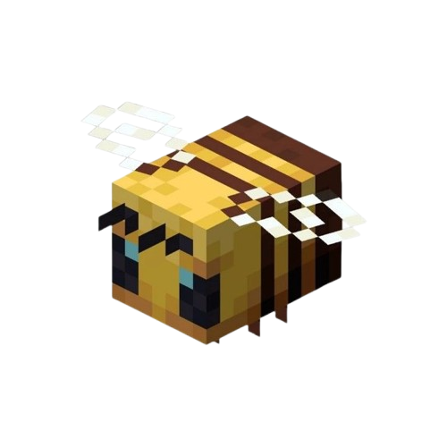

HARVEST TROPHY CHEST (8 BADGES)
Collect ALL 8 badges to unlock the Warden's Official Harvest & Time Master License!
 🔒 SEALED
🔒 SEALED
THE WARDEN GUARDS YOUR HARVEST LICENSE!
Unlock ALL 8 Achievements in the Trophy Chest to unseal your official printable Present Simple vs Present Continuous Harvest Chef License!
MASTER OF TIME & HARVEST
This official license is proudly awarded to:
For mastering Present Simple (Every Day) vs Present Continuous (Right Now) in +, -, and ?, spotting all Spyglass Time Clues, and running the Minecraft Farm Bakery & Cafe!
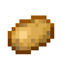
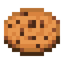
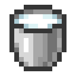
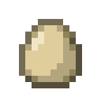
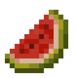
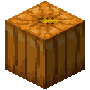
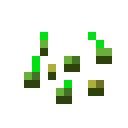